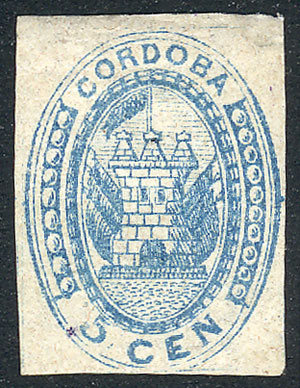
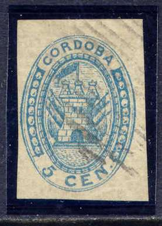
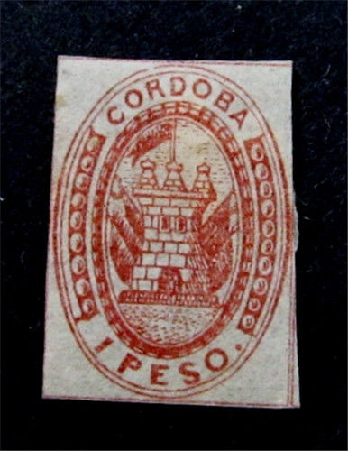

{kind=link}



Return To Catalogue - Argentine
Note: on my website many of the
pictures can not be seen! They are of course present in the
catalogue;
contact me if you want to purchase it.
5 c blue 10 c black
Value of the stamps |
|||
vc = very common c = common * = not so common ** = uncommon |
*** = very uncommon R = rare RR = very rare RRR = extremely rare |
||
| Value | Unused | Used | Remarks |
| 5 c | RR | ? | Printed in sheets of 30 stamps. |
| 10 c | RRR | ? | Printed in sheets of 20 stamps. |
Both stamps were issued on 28 October 1858. The 5 c was printed in sheets of 30 stamps (3 rows of 10 stamps) and the 10 c in sheets of 20 (4 rows of 5 stamps). The value was applied manually on the printing stones (and thus the stamps can be plated). A ince website on these stamps (in German) can be found at: http://www.klassische-philatelie.ch/arg/arg_cordoba.html.
Forgeries exist, (I'm not quite sure if the above 5 c stamp is genuine), examples:


(Forgeries)
In the genuine specimens, the letters 'CORDOBA' should be almost as thick as 'CEN'. In the genuine stamps, some have a dot behind 'CEN' and others don't (only 1 in 30 stamps has a dot).
I know that in 1880 forgeries were made in Buenos Aires (often offered as 'reprints') by a certain Mr. Esteve Latour (Le Timbre Poste by Moens, 1882, No.236, page 77).
Genuine stamps with forged cancels also exist, example:

(Genuine stamp with forged cancel)
The forger Schröder seems to have made forgeries of the 5 c and 10 c, but he also added bogus values of 15 c violet, 25 c orange, 50 c green and 1 P red. In an article from the American Philatelist ol 36, 1922-23, page 99-100, in which he describes the genuine 10 c varieties, Hugo Griebert mentions that the Latour and Schroeder forgeries are easily identifiable (but he doesn't say how....).


(Schröder or Schroeder forgeries?)
Other forgeries of the 5 c value

Some badly done forgeries.
A reprint made for the 100 year stamp centenary.
In this design were issued (perforated or imperforate): 1 c green, 2 c blue, 3 c red and 5 c brown.
{kind=link}
{kind=link}